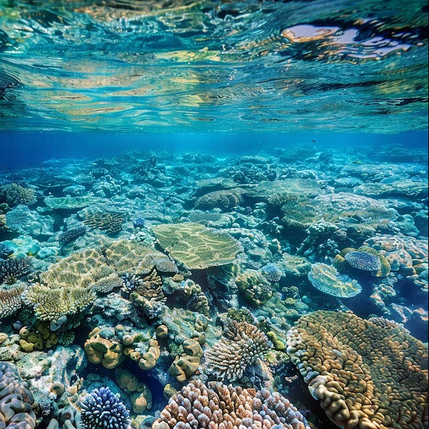

TU ACCIÓN TAMBIÉN LLEGA AL MAR
Pequeños cambios pueden generar grandes impactos.
¿Qué tan consiente eres del impacto que generas en el océano?

Responde este breve cuestionario y descubre cómo puedes aportar a un caribe más limpio y sostenible